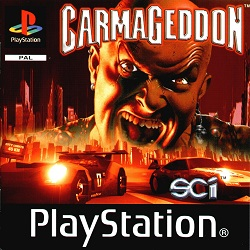
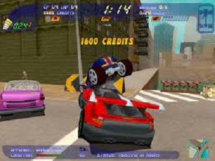
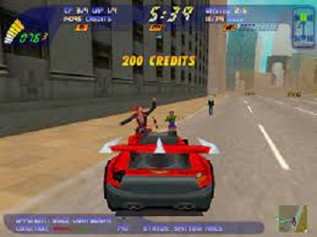
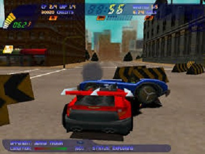
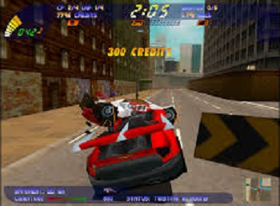

O jogo mais violento, sanguinario e sem misericórdia da época. O objetivo do jogo é atropelar para conseguir pontos. Conta com gráficos em três dimensões, que foram melhorados e ganharam um excelente acabamentos (tornando os atropelamentos mais realistas e grotescos). As cenas chegaram a ser chocantes na época de que foi lançado. Os veiculos foram baseados em modelos reais, continha 30 missões diferentes. O jogo suportava joystick analógico, e permitia que duas pessoas correcem ao mesmo tempo (em tela dividida). O sistema de inteligência artificial tornava o jogo mais dificil ou facil. Os efeitos sonoros eram melhorado para serem possivél escutar os gritos de terror das vitimas perseguidas, e os ossos sendo partidos no momento do choque. Não era um jogo para pessoas com problemas de coração tinha a opção de transformar as pessoas em alienígenas.
|  |  |
|  |  |